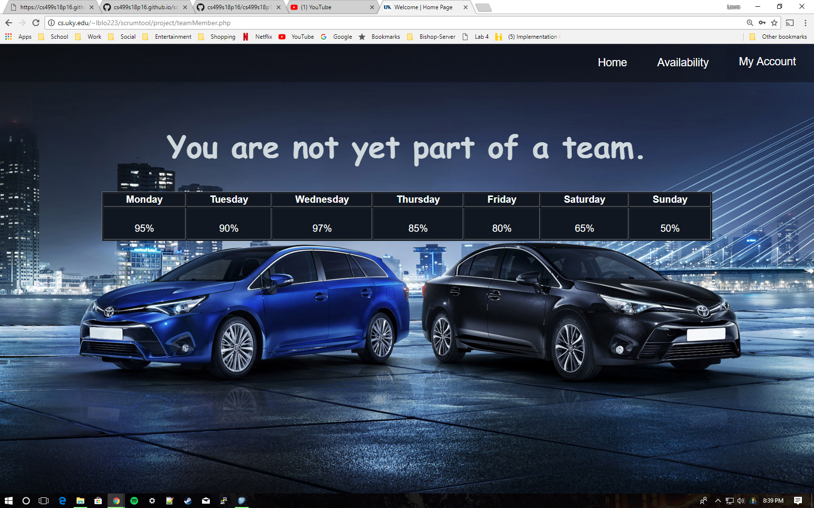
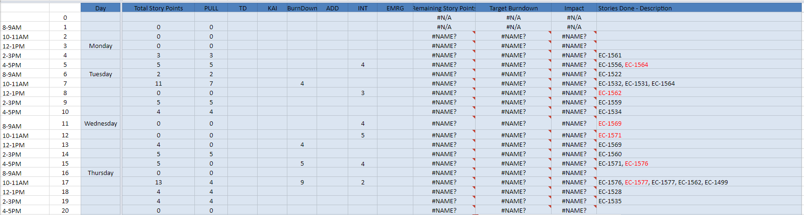
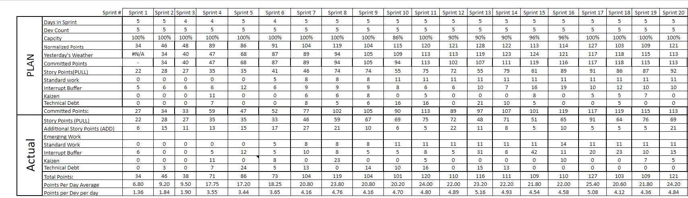

User Screens for Web Application
- Login screen
- Default page for user assigned to no team

- The landing page of an Admin user account:

- Admin account: adding a user to the Scrum Tool.

- Admin account: adding an existing user to an existing team.

- The landing page of a Scrum Master user account.

- Scrum Master: adding an existing developer to their team.

- Scrum Master: removing a developer from their team.

- The landing page of a Developer user account:

- Developer: the page for entering availability in decimal format for a choice of up to 3 sprints ahead.

- The landing page of a Product Owner user account:

- Product Owner: Creating a project (adding the name of a project to the database).

- Product Owner: Assigning a project a project they own to an existing team.

- The following visuals are data samples from the Microsoft Excel spreadsheet our customer is currently using as a means of collecting and manipulating team data per sprint. These are included in this section of the final project report to exemplify the complexity of the current methods being used by the customer and highlight the necessity for a working web tool that simplifies the task of availability tracking in their Scrum Teams.

